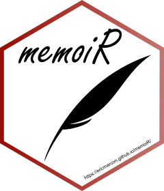

Cool macrofauna title
Abstract
Enter here our amazing abstract!
Keywords
soil macrofauna, Paracou, Amazon forest, ecology
1 Introduction
1.1 Context 1
text
1.2 Context 2
text
2 Material and Methods
2.1 Study Site
Refer to Figure 1 for texts
text
2.2 Sampling and Identification
text
2.3 Statistical analysis
text
Explorative Analysis
text
Analysis of Abundances (Generalized Linear Mixed Models)
text
Analysis of Community Composition (PERMANOVA)
text
3 Results
3.1 General
and refer to Table 1 for table
| Sepal length | Sepal width | Petal length | Petal width | Species |
|---|---|---|---|---|
| 5.1 | 3.5 | 1.4 | 0.2 | setosa |
| 4.9 | 3.0 | 1.4 | 0.2 | setosa |
| 4.7 | 3.2 | 1.3 | 0.2 | setosa |
| 4.6 | 3.1 | 1.5 | 0.2 | setosa |
| 5.0 | 3.6 | 1.4 | 0.2 | setosa |
| 5.4 | 3.9 | 1.7 | 0.4 | setosa |


3.2 GLMM
Global Abundance
text
| Comparison | Abundance ratio | z-ratio | Adjusted p-value |
|---|---|---|---|
| L - 10 | 0.13 | -9.12 | <0.0001*** |
| L - 20 | 0.83 | -0.78 | 0.714 |
| 10 - 20 | 6.18 | 8.34 | <0.0001*** |
| Significance levels: * p < 0.05; ** p < 0.01; *** p < 0.001 | |||
Bioengineer Abundances
text
3.3 PERMANOVA
text
| Sepal length | Sepal width | Petal length | Petal width | Species |
|---|---|---|---|---|
| 5.1 | 3.5 | 1.4 | 0.2 | setosa |
| 4.9 | 3.0 | 1.4 | 0.2 | setosa |
| 4.7 | 3.2 | 1.3 | 0.2 | setosa |
| 4.6 | 3.1 | 1.5 | 0.2 | setosa |
| 5.0 | 3.6 | 1.4 | 0.2 | setosa |
| 5.4 | 3.9 | 1.7 | 0.4 | setosa |

4 Discussion
text
5 Conclusion
text
6 layout stuff, remove after
6.1 Figures

Figures can be created by R code (Figure 5) in a division whose name starts with #fig-. Cross-references are made with the command @label, e.g.: @fig-pressure.
In PDF, a figure can use the full width of the page by adding the options fig-env="figure*" to the header of the division.
Images stored in a file are integrated into a piece of code by the include_graphics() function, see Figure 6.
Systematically place these files in the images folder for the automation of GitHub pages.
6.2 Tables
The horizontal - and vertical separators | allow you to draw a table according to Markdown syntax, but this is not the best method in R.
Tables can also be produced by R code. The content of the table is in a dataframe. The gt() function from package gt formats it. Refer to the documentation of the package for details about formatting the output.
| Sepal length | Sepal width | Petal length | Petal width | Species |
|---|---|---|---|---|
| 5.1 | 3.5 | 1.4 | 0.2 | setosa |
| 4.9 | 3.0 | 1.4 | 0.2 | setosa |
| 4.7 | 3.2 | 1.3 | 0.2 | setosa |
| 4.6 | 3.1 | 1.5 | 0.2 | setosa |
| 5.0 | 3.6 | 1.4 | 0.2 | setosa |
| 5.4 | 3.9 | 1.7 | 0.4 | setosa |
By default, the tables is contained in its column.
A full-width table is Table 5. It is obtained with the option fig-env="table*" in the header of the division.
| Treatment | Timber | Thinning | Fuelwood | %AGB lost |
|---|---|---|---|---|
| Control | 0 | |||
| T1 | DBH \(\geq\) 50 cm, commercial species, \(\approx\) 10 trees/ha | \([12\%-33\%]\) | ||
| T2 | DBH \(\geq\) 50 cm, commercial species, \(\approx\) 10 trees/ha | DBH \(\geq\) 40 cm, non-valuable species, \(\approx\) 30 trees/ha | \([33\%-56\%]\) | |
| T3 | DBH \(\geq\) 50 cm, commercial species, \(\approx\) 10 trees/ha | DBH \(\geq\) 50 cm, non-valuable species, \(\approx\) 15 trees/ha | 40 cm \(\leq\) DBH \(\leq\) 50 cm, non-valuable species, \(\approx\) 15 trees/ha | \([35\%-56\%]\) |
Note that tables can’t be shown on the first page of the PDF output of the Stylish Article template: they would conflict with the table of contents.
6.3 Lists
Lists are indicated by *, + and - (three hierarchical levels) or numbers 1., i. and A. (numbered lists). Indentation of lists indicates their level: *, + and - may be replaced by - at all levels, but four spaces are needed to nest a list into another.
- First element of a list
- sub-list
- Second element
- Continuation of the list
Leave an empty line before and after the list, but not between its items.
6.4 Math
Equations in LaTeX format can be inserted inline, like \(A = \pi r^2\) or isolated like \[e^{i \pi} = -1.\]
They can be numbered, see Equation 1, after adding them a label:
\[ A = \pi r^2. \tag{1}\]
6.5 Cross-references
Figures and tables have a label declared in their division tbl-xxx or fig-yyy, starting with fig- or tbl-.
For equations, the label is added manually by the code {#eq-xxx} after the end of the equation.
Sections can be tagged by ending their title with {#sec-yyy}.
In all cases, the call to the reference is made by @.
6.6 Bibliography
Bibliographic references included in the .bib file declared in the document header can be called by [@CitationKey], in parentheses (Xie et al. 2018), or without square brackets, in the text, as Xie (2016).
The bibliographic style can be specified, by adding the line
csl: file_name.cslin the document header and copying the .csl style file to the project folder. More than a thousand styles are available1 and their URL can be used instead of copying the file, e.g.:
csl: https://www.zotero.org/styles/xxx6.7 Forcing line breaks
Hyphenation is handled automatically in LaTeX. If a word is not hyphenated correctly, add its hyphenation in the preamble of the file with the command hyphenation (words are separated by spaces, hyphenation locations are represented by dashes).
If LaTeX can’t find a solution for the line break, for example because some code is too long a non-breaking block, add the LaTeX command \break to the line break location. Do not leave a space before the command. The HTML document ignores LaTeX commands.
6.8 Languages
Languages are declared in the document header.
The main language of the document (lang) changes the name of some elements, such as the table of contents. The change of language in the document (one of otherlangs) is managed in LaTeX (but not fully in HTML).
For a single word, to ensure correct hyphenation in LaTeX, use the following command, ignored un HTML:
\foreignlanguage{italian}{ciao}For a paragraph, to also ensure correct quotes and punctuation spacing, use
::: {lang=fr}
"Bonjour": en français!
:::to obtain:
“Bonjour”: en français!
The current language has an effect only in LaTeX output: a space is added before double punctuation in French, the size of spaces is larger at the beginning of sentences in English, etc.
6.9 Text color
This template includes the “color-text” filter for Quarto. It makes colored text possible using the [content]{color=<name>} syntax. This is a red example. Defined colors are blue, green and red. To add more colors, they must be defined in the document header in format:, stylisharticle-pdf:, header-includes: . This is the code for “grey”:
\definecolor{grey}{RGB}{191, 191, 191}They must also be included in a .css file declared in format:, stylisharticle-html:
css: colors.cssIn this css, colors are declared by
.color-grey {color: rgb(191, 191, 191);}7 Caveats
Quarto does not yet support all features of R Markdown. Unsolved issues are listed here, as of version 1.9:
- The
columnoptions in code chunks or{.column-xxx}div’s can’t be used in this template. They interfere with the two-column LaTeX layout. The template relies on other techniques to print full-width figures and tables.
References
Xie, Yihui. 2016. Bookdown: Authoring Books and Technical Documents with R Markdown. Chapman; Hall/CRC. https://github.com/rstudio/bookdown.
Xie, Yihui, J. J. Allaire, and Garrett Grolemund. 2018. R Markdown: The Definitive Guide. Chapman; Hall/CRC. https://bookdown.org/yihui/rmarkdown.